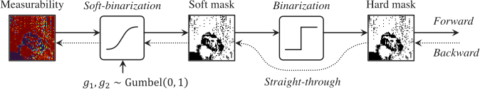
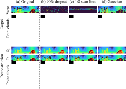

LiDAR range images from KITTI [Geiger et al. IJRR 2013]
3D laser scanning by LiDAR sensors plays an important role for mobile robots to understand their surroundings. Nevertheless, not all systems have high resolution and accuracy due to hardware limitations, weather conditions, and so on. Generative modeling of LiDAR data as scene priors is one of the promising solutions to compensate for unreliable or incomplete observations. In this paper, we propose a novel generative model for learning LiDAR data based on generative adversarial networks. As in the related studies, we process LiDAR data as a compact yet lossless representation, a cylindrical depth map. However, despite the smoothness of real-world objects, many points on the depth map are dropped out through the laser measurement, which causes learning difficulty on generative models. To circumvent this issue, we introduce measurement uncertainty into the generation process, which allows the model to learn a disentangled representation of the underlying shape and the dropout noises from a collection of real LiDAR data. To simulate the lossy measurement, we adopt a differentiable sampling framework to drop points based on the learned uncertainty. We demonstrate the effectiveness of our method on synthesis and reconstruction tasks using two datasets. We further showcase potential applications by restoring LiDAR data with various types of corruption.
We propose DUSty (depth with uncertainty as 2D style), a noise-aware GAN framework for LiDAR range images with the dropout noises. DUSty learns the decomposed representation of depth and noise through a pseudo-measurement process.

We formulate the LiDAR measurement as Bernoulli sampling with the structured probability map (measurability). To learn the discrete sampling function jointly with the depth modality, the gradients of the sampled noise are re-parameterized by straight-through Gumbel-Sigmoid [Maddison et al. ICLR 2017].
From left to right: learned complete depth, point-wise measurability, and the final range images.

The trained generator can be used as scene priors to restore LiDAR data.

@inproceedings{nakashima2021learning,
author = {Nakashima, Kazuto and Kurazume, Ryo},
title = {Learning to Drop Points for LiDAR Scan Synthesis},
booktitle = {IEEE/RSJ International Conference on Intelligent Robots and Systems (IROS)},
pages = {222--229}
year = {2021}
}
This work was supported by a Grant-in-Aid for JSPS Fellows Grant Number JP19J12159 and JSPS KAKENHI Grant Number JP20H00230.